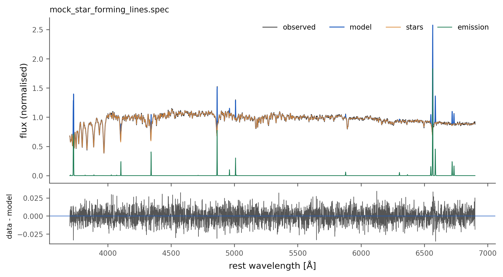
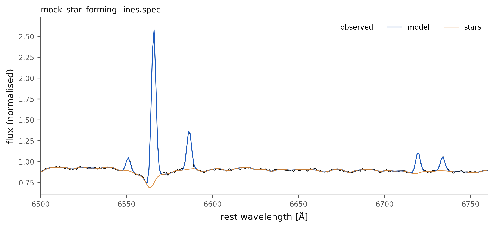
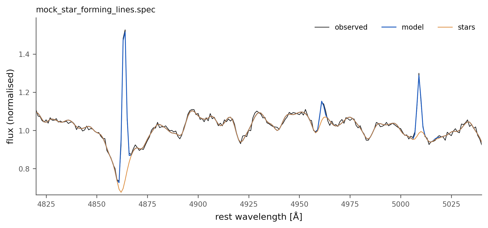

Emission lines#
This tutorial fits a star-forming galaxy whose spectrum carries H II-region emission lines, in the espop mode, and reads the gas kinematics, the line fluxes in each of their units, and the galaxy’s place on the BPT diagram. The mock’s gas moves at 50 km s⁻¹ with an intrinsic dispersion of 60 km s⁻¹.
The whole tutorial as one file, ready to run: 02_emission_lines.py.
The fit#
import json
import numpy as np
import brainsp
spectrum = "examples/spectra/mock_star_forming_lines.spec"
truth = json.load(open(spectrum.replace(".spec", ".truth.json")))
r = brainsp.fit_spectrum(spectrum, output_dir="fits", quiet=True,
nebular_mode="espop", wavelength_scale="vacuum")
print(r)
print(f"stars: v0 = {r.v0:.1f} km/s, sigma = {r.sigma:.1f} km/s, A_V = {r.av:.3f}")
print(f"gas: v = {r.v_gas:.1f} km/s, sigma = {r.sigma_gas:.1f} km/s "
f"(truth {truth['v_gas']}, {truth['sigma_gas']})")
espop fits every line of the catalogue that falls in the range, with free amplitudes and each group of lines with its own kinematics. It needs to know whether the wavelengths are in air or in vacuum; the mocks, like SDSS and MaNGA, are in vacuum (The three fitting modes).
The line fluxes, in their three forms#
written = r.lines
observed = r.line_fluxes(units="normalised", observed=True)
print("\n line written as observed truth")
for name, true_flux in truth["lines"].items():
print(f" {name:16s} {written[name][0]:8.3f} {observed[name][0]:8.3f}"
f" {true_flux:8.3f}")
physical = r.line_fluxes(units="input", observed=True)
print(f"\nH-alpha, input units: {physical['Halpha_6563'][0]:.4g}")
The summary writes every flux relative to the normalised continuum and corrected for the stellar extinction (written). line_fluxes(observed=True) undoes the extinction correction, which is how the mock’s lines were made, and units="input" converts to the units of the input spectrum times Å (Reading a spectrum’s results).
The BPT diagram#
n2 = np.log10(observed["[N II]_6583"][0] / observed["Halpha_6563"][0])
o3 = np.log10(observed["[O III]_5007"][0] / observed["Hbeta_4861"][0])
from brainsp.megacube import bpt_nii_class
cls = int(bpt_nii_class(np.array([n2]), np.array([o3]))[0])
print(f"log [N II]/Ha = {n2:.2f}, log [O III]/Hb = {o3:.2f} -> "
f"{['', 'star forming', 'composite', 'LINER', 'Seyfert'][cls]}")
What it printed#
Plot saved to fits/mock_star_forming_lines_fit.pdf
<FitResult mock_star_forming_lines.spec: v0=39.06 km/s, sigma=87.07 km/s, AV=0.4671, chi2=0.98578>
stars: v0 = 39.1 km/s, sigma = 87.1 km/s, A_V = 0.467
gas: v = 49.8 km/s, sigma = 58.0 km/s (truth 50.0, 60.0)
line written as observed truth
[O II]_3726 1.518 1.203 1.200
[O II]_3729 2.123 1.683 1.620
Hdelta_4102 0.694 0.576 0.546
Hgamma_4340 1.170 1.008 0.984
Hbeta_4861 2.337 2.177 2.100
[O III]_4959 0.243 0.229 0.241
[O III]_5007 0.725 0.688 0.720
He I_5876 0.180 0.186 0.210
[O I]_6300 0.163 0.173 0.180
[N II]_6548 0.469 0.506 0.491
Halpha_6563 5.654 6.112 6.000
[N II]_6583 1.432 1.551 1.500
[S II]_6716 0.768 0.839 0.840
[S II]_6731 0.513 0.561 0.600
H-alpha, input units: 5.983
log [N II]/Ha = -0.60, log [O III]/Hb = -0.50 -> star forming
The gas kinematics come back within 0.2 km s⁻¹ in velocity and 2 km s⁻¹ in dispersion. The fluxes as observed agree with the truth to a few per cent for the strong lines; the faint ones carry the noise of a few pixels each, which their errors (r.lines[name][1]) quantify. The ratios place the galaxy among the star-forming galaxies, as built.
Figures#
brainsp.plots.spectrum(r, "t02_spectrum.png")
brainsp.plots.spectrum(r, "t02_halpha.png", xlim=(6500, 6760), residuals=False)
brainsp.plots.spectrum(r, "t02_hbeta.png", xlim=(4820, 5040), residuals=False)

The espop fit: the stellar model and the emission lines over the data.#

H\(\alpha\), [N II] 6548, 6583 and [S II] 6716, 6731, each fitted at the kinematics of its group.#

H\(\beta\) in emission inside its stellar absorption trough, and [O III] 4959, 5007.#
What next#
An active nucleus adds a featureless continuum that changes the stellar populations if it is not modelled: An active nucleus.